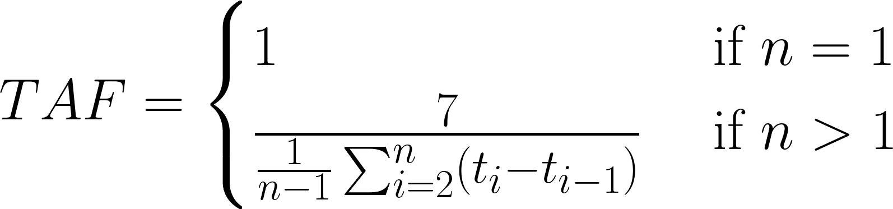

Objectives & study protocol
Abstract
The backbone of neoadjuvant chemotherapy for early breast cancer (eBC) is the sequential administration of anthracyclines and taxanes. The administration of the initially planned dose-intensity of paclitaxel is frequently hampered by side effects, mainly chemotherapy-induced peripheral neuropathy. Importantly, there is no established strategy to treat or prevent this side effect. Despite these facts, no previous study has assessed the effects of reduced paclitaxel dose-intensity administration.
Using a retrospective cohort of TNBC and HER2-positive EBC treated in the neoadjuvant setting with anthracyclines-cyclophosphamide and weekly paclitaxel or carboplatin-paclitaxel (with or without trastuzumab ± pertuzumab) collected at 8 different cancer centres across Europe, we aim to:
- Primary Objective: highlight a potential impact of reduced paclitaxel dose-intensity on treatment effect (pCR rate at post-neoadjuvant surgery) and invasive breast cancer-free survival,
- Secondary Objective: Estimate if this impact differs according to the breast cancer subtype,
- Secondary Objective: Characterize TNBC/HER2+ early Breast Cancer Patients treated in the neoadjuvant setting with anthracyclinescyclophosphamide and subsequent paclitaxel with respect to demographics and clinical characteristics at diagnosis index date and treatment received.
- Exploratory Objective: highlight a potential impact of reduced paclitaxel dose-intensity on overall survival
- Exploratory Objective: Characterize the clinical factors and side effects associated with early cessation or dose-intensity reduction of paclitaxel administration.
- Exploratory Objective: Assess and quantify the frequency of early cessation and dose reduction of paclitaxel administration in patients presenting with treatment-induced neuropathy.
The homogeneity of the treatment schedules across the different centres and the binary readout of the efficacy outcome (pCR at postneoadjuvant surgery) will allow us to perform a reliable analysis of the datasets.
Data management
Common data model – items availability
REDCap project and eCRF

Form 2.1 - Neoadjuvant treatment (Paclitaxel)
Form 2.2 - Neoadjuvant treatment (other)
Quality checks and data validation
Analysis methodology
Treatment intensity index
Possible strategies for reducing the intensity of paclitaxel
treatment include:
- reducing the dose at each cycle,
- reducing the number of cycles (i.e., early cessation),
- increasing the time interval between cycles.
These modifications to the treatment regimen can be analysed
directly in terms of X mg/m2 dose reduction,
X cycles omitted, or X days prolonged
administration interval, but can also be quantified as a
standardised relative value to the expected/standard regimen (i.e.
80 mg/m2 weekly in 12 cycles). Lets denote n is
the number of cycles, di is the dose at the
ith cycle and ti is the time
of the ith cycle from the start of treatment.
For each patient, the three dimensions/factors of relative treatment
intensity (from 0 to 1) can be expressed as follows:
Dose-intensity factor (DIF) - The DIF value expresses the
proportion of the average dose applied in each administration
compared to the standard 80 mg/m2. This factor does not
fully represent a reduction in the total cumulative dose (e.g. early
cessation of treatment has no effect here), but focuses specifically
on the change in treatment intensity using a dose reduction strategy
if treatment is administered.
Cycles-completeness factor (CCF) - The CCF value represents
the proportion of cycles completed compared to the standard 12
cycles. This factor represents the completeness of treatment simply
in terms of actual paclitaxel administrations, regardless of
possible dose reduction or time delay.
Time-adherence factor (TAF)- The TAF value expresses the
inverted ratio of the average time between each cycle compared to
the standard 7 days. In the context of treatment intensity, this
factor represents the level of adherence to the time schedule (the
smaller the value towards zero, the more spread out the treatment is
over time). If the patient has completed only one cycle, the time
interval cannot be calculated, but this factor takes the value of 1
because it is not an interval prolongation strategy.

Two approaches to quantify the intensity of paclitaxel treatment
were investigated:
- Scenario A: dose intensity calculated as a product of DIF and
CCF (thus taking mainly the cumulative dose into account).
- Scenario B: treatment intensity calculated as a product of DIF,
CCF and also TAF (thus taking into account the cumulative dose but
also the spread over time).
Statistical analysis
Standard descriptive statistics were used to describe the analyzed cohort: mean, standard deviation, median and interquartile range are given for continuous variables and absolute and relative frequencies are given for categorical variables. When testing for differences between the TNBC and Her2+ patients (or other stratification variable) the Pearson's chi-square test (for nominal variables), t-test (for continuous variables) and Mann-Whitney test (for ordinal variables) were used. When the assumptions for the Pearson's chi-square test and t-test are not met, the Fisher's exact test and Mann-Whitney test were used instead, respectively. Due to the anonymisation of the data, some centres could not share the exact age of the patients at the time of diagnosis and instead age categories (e.g. 10-year intervals) were given. To utilize these data correctly, they were treated as interval-censored and a survival regression model with normally distributed errors was used to estimate basic descriptive statistics and test for differences.
To identify the optimal cut-off value of paclitaxel dose intensity the CART (Classification And Regression Tree) algorithm for pCR prediction was used and the first splitting rule was selected as the best criterion to distinguish patients with/without pCR. The same cut-off was then used in the analysis of invasive breast cancer-free survival (IBCFS) and overall survival (OS).
Logistic regression model was used to estimate odds ratios (OR) of individual potential predictors of pCR. Similarly, in the case of the invasive breast cancer-free survival (IBCFS) analysis and overall survival (OS) analysis, the Cox proportional hazards regression model was used to estimate hazard ratios (HR). When fitting multivariate models, only predictors giving statistically significant results were consecutively selected. In the case of correlation between significant predictors, preference was always given to the one whose data were more available and reliable across all centres (e.g. age over menopausal status). Similarly, primary classifications were preferred over derived ones (cT and cN over UICC/AJCC staging). In addition, the sybtype of disease and any variable of interest (e.g. toxicity for predicting reduced dose intensity, etc.) was always kept in the multivariate model. Missing data for individual factors were included in the multivariate models as a separate category and their effect on the final prediction was checked (if not statistically significant, their HR and OR are not reported in the results). Statistical significance testing of HR and OR were performed at the 5% significance level.
Results
A. Basic description
Basic descriptive statistics are calculated for the complete dataset of all patients. In addition, a comparison is made between two groups of patients with different disease subtypes (TNBC vs. Her2+). For clarity, the results are divided into separate tables for patient characteristics, tumor characteristics, neoadjuvant treatment course, toxicity, surgery and adjuvant treatment. A detailed description is made for paclitaxel treatment, where information on its course and possible reduction of treatment intensity is given in a separate table. Two parameters expressing the intensity of paclitaxel treatment are visualized in separate graphs to show their dristibution.
Detailed description of neoadjuvant treatment with paclitaxel. Graphs showing the distribution of the two parameters for paclitaxel treatment intensity are available here: Dose intensity and Overall treatment intensity.
Table A.06 - Basic descriptive statistics of adjuvant treatment and comparison by disease subtype.
All tables are also available in colour in xlsx format here: Tab A.01, Tab A.02, Tab A.03a, Tab A.03b, Tab A.04, Tab A.05, Tab A.06.
B. Treatment intensity reduction
As part of the evaluation of paclitaxel reduction, in addition to the standard descriptive statistics (see Table A.03b), the reasons for dose reduction, early discontinuation, and prolongation of the interval between paclitaxel administrations are summarised. Patients were then divided into two groups according to dose intensity (Scenario A) or treatment intensity (Scenario B) and descriptive statistics of paclitaxel treatment setting are presented for these groups. Finally, logistic regression was also used to assess patient baseline characteristics and toxicity during treatment as possible predictors of treatment intensity reduction.
Graphical visualisation of the reasons for treatment modification are available here: Dose reduction, Early cessation, Interval prolongation. In addition to a simple description of the frequency, the probabilities of achieving a complete pathological response (pCR) according to the reasons for treatment reduction are also shown. Note: the percentages of frequencies shown in the graphs are based only on the number of patients with a given treatment modification (not the entire population as in Table B.01).
Scenario A: the treatment intensity index is quantified using only the combination of dose and number of cycles (referred to as "Dose intensity").
Scenario B: the treatment intensity index is quantified using the combination of dose, number of cycles and time interval between administrations (referred to as "Treatment intensity").
For clarity, the results of the univariate prediction of treatment intensity reduction under Scenario A are presented in separate tables by predictor type.
For clarity, the results of the univariate prediction of treatment intensity reduction under Scenario B are presented in separate tables by predictor type.
All tables are also available in colour in xlsx format here: Tab B.01, Tab B.02a, Tab B.02b, Tabs B.03a/04a/05a/06a, Tabs B.03b/04b/05b/06b, Tab B.07a, Tab B.07b.
C. Pathological complete response (pCR)
Univariate logistic regression models were first used to assess predictors associated with achieving a pathological complete response (pCR). In addition to all baseline characteristics, neoadjuvant treatment regimen and toxicity, various parameters of paclitaxel intensity reduction rate were analyzed in detail. The main outputs of this part of the analysis are then multivariate models that estimate the effect of treatment intensity reduction (under both scenario A and B) on pathological complete response, taking into account other important factors.
Another form of graphical illustration of the effect of different types of paclitaxel intensity reduction is available here: Dose reduction, Early cessation, Interval prolongation, Dose intensity reduction (scenario A), Dose treatment reduction (scenario B)
Table C.06a - Multivariate model estimating the odds ratio of
pathological complete response (pCR) accounting for reduced
paclitaxel dose intensity (intensity index under 0.84).
This model assesses the effect of reduced dose intensity (scenario
A) overall, regardless of disease subtype. A graphical visualisation
of the multivariate model using forestplot is available
here.
Table C.06b - Multivariate model estimating the odds ratio of
pathological complete response (pCR) accounting for reduced
paclitaxel treatment intensity (intensity index under 0.73).
This model assesses the effect of reduced treatment intensity
(scenario B) overall, regardless of disease subtype. A graphical
visualisation of the multivariate model using forestplot is
available
here.
Table C.07a - Multivariate model estimating the odds ratio of
pathological complete response (pCR) accounting for reduced
paclitaxel dose intensity (intensity index under 0.84) and disease
subtype.
This model assesses the effect of reduced dose intensity (scenario
A) depending on the disease subtype. A graphical visualisation of
the multivariate model using forestplot is available
here.
Table C.07b - Multivariate model estimating the odds ratio of
pathological complete response (pCR) accounting for reduced
paclitaxel treatment intensity (intensity index under 0.73) and
disease subtype.
This model assesses the effect of reduced treatment intensity
(scenario B) depending on the disease subtype. A graphical
visualisation of the multivariate model using forestplot is
available
here.
All tables are also available in colour in xlsx format here: Tabs C01/02/03/04/05, Tab C.06a, Tab C.06b, Tab C.07a, Tab C.07b.
D. Invasive breast cancer-free survival (IBCFS)
Univariate Cox regression models were first used to assess predictors associated with a risk of invasive breast cancer event. In addition to all baseline characteristics, neoadjuvant treatment regimen and toxicity, various parameters of paclitaxel intensity reduction rate were analyzed in detail. The main outputs of this part of the analysis are then multivariate models that estimate the effect of treatment intensity reduction (under both scenario A and B) on invasive breast cancer-free survival, taking into account other important factors.
The correlation between IBCFS and pathological complete response
(pCR) is also presented here.
Another form of graphical
illustration (Kaplan-Meier curve) of the effect of different types
of paclitaxel intensity reduction is available here:
Dose reduction,
Early cessation,
Interval prolongation,
Dose intensity reduction (scenario A),
Dose treatment reduction (scenario B),
pCR.
Table D.06a - Multivariate model estimating the hazard ratio of
invasive breast cancer-free survival (IBCFS) accounting for
reduced paclitaxel dose intensity (intensity index under 0.84).
This model assesses the effect of reduced dose intensity (scenario
A) overall, regardless of disease subtype. A graphical visualisation
of the multivariate model using forestplot is available
here.
Table D.06b - Multivariate model estimating the hazard ratio of
invasive breast cancer-free survival (IBCFS) accounting for
reduced paclitaxel treatment intensity (intensity index under
0.73).
This model assesses the effect of reduced treatment intensity
(scenario B) overall, regardless of disease subtype. A graphical
visualisation of the multivariate model using forestplot is
available
here.
Table D.07a - Multivariate model estimating the hazard ratio of
invasive breast cancer-free survival (IBCFS) accounting for
reduced paclitaxel dose intensity (intensity index under 0.84) and
disease subtype.
This model assesses the effect of reduced dose intensity (scenario
A) depending on the disease subtype. A graphical visualisation of
the multivariate model using forestplot is available
here.
Table D.07b - Multivariate model estimating the hazard ratio of
invasive breast cancer-free survival (IBCFS) accounting for
reduced paclitaxel treatment intensity (intensity index under
0.73) and disease subtype.
This model assesses the effect of reduced treatment intensity
(scenario B) depending on the disease subtype. A graphical
visualisation of the multivariate model using forestplot is
available
here.
All tables are also available in colour in xlsx format here: Tabs D01/02/03/04/05, Tab D.06a, Tab D.06b, Tab D.07a, Tab D.07b.
E. Overall survival (OS)
Univariate Cox regression models were used to assess predictors associated with a risk of death from any reason. In addition to all baseline characteristics, neoadjuvant treatment regimen and toxicity, various parameters of paclitaxel intensity reduction rate were analyzed in detail. Due to the low number of observed death events, multivariate models were not fitted.
The correlation between OS and pathological complete response (pCR)
is also presented here.
Another form of graphical illustration
(Kaplan-Meier curve) of the effect of different types of paclitaxel
intensity reduction is available here:
Dose reduction,
Early cessation,
Interval prolongation,
Dose intensity reduction (scenario A),
Dose treatment reduction (scenario B),
pCR.
All tables are also available in colour in xlsx format here: Tabs E01/02/03/04/05.